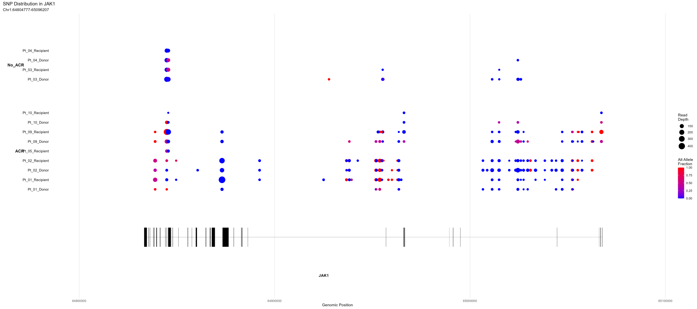
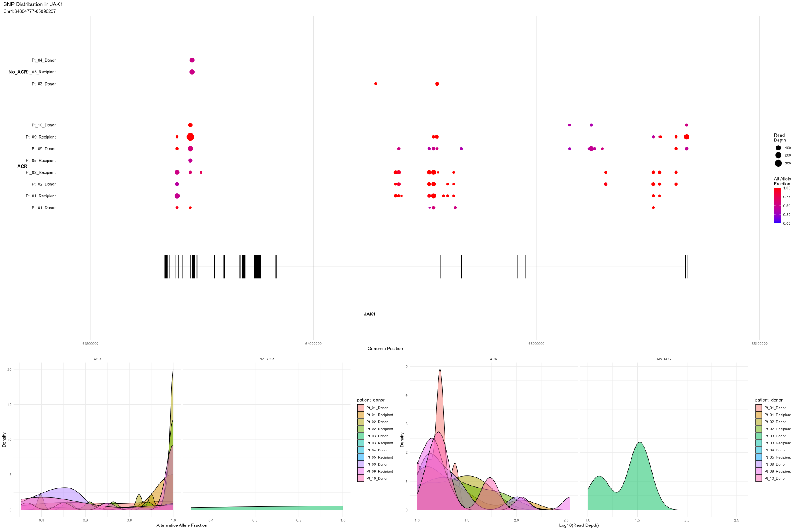

group_level_DE.RmdGroup level differential expression analysis requires a SNP database to be built (please see previous tutorials). This guide will walk you through the process of analyzing SNPs at the group level using the variantCell package.
To view the SNP metadata within your project, you can use the following command:
\dontrun{
# Initialize a variantCell project
project <- variantCell$new()
# In practice, you would add samples and build the database first
# project$addSampleData(...)
# project$buildSNPDatabase()
# project$setProjectIdentity("cell_type")
}
# View SNP metadata
View(project$snp_database$cell_metadata)You can create new metadata variables to help with grouping or visualization:
# Create a combined patient and donor type variable
project$snp_database$cell_metadata$patient_donor <- paste0(
project$snp_database$cell_metadata$patient,
'_',
project$snp_database$cell_metadata$donor_type
)Prior to analyzing SNP expression differences between groups, we need to aggregate the individual cell SNP counts into group-level summaries.
# Function signature and parameters
project$aggregateByGroup(
group_by, # Column name in metadata to use for grouping cells
donor_type = NULL, # Specific donor type to analyze (e.g., "Donor" or "Recipient")
min_cells_per_group = 3, # Minimum cells required per group
use_normalized = TRUE # Whether to use normalized counts
)
# Aggregate SNP counts by ACR status, using only donor cells
collapsed <- project$aggregateByGroup(
group_by = "snpGrade", # Group by ACR status
use_normalized = TRUE, # Use normalized counts
donor_type = 'Donor' # Restrict to donor cells only
)When executed, you should see output similar to:
Filtering for donor type: Donor
Total cells before filter: 56676
Cells passing filter: 22096
NA values in donor_type: 1003
Collapsed data by snpGrade:
- Total cells: 22096
- Total groups: 2
- Included groups: 2
- Filtered groups: 0
- Using normalized counts: TRUE
Group details:
group n_cells mean_depth filter_status
1 ACR 12598 3981.279 included
2 No_ACR 9498 7392.881 includedAfter aggregating our data, we can identify SNPs that are
differentially present between groups. The findSNPsByGroup
function compares alternative allele frequencies between groups to find
variants that are specifically present in one group but not the
other.
# Function signature and parameters
project$findSNPsByGroup(
ident.1, # Primary group identity to analyze
ident.2 = NULL, # Secondary group identity to compare against (NULL = all others)
aggregated_data, # Output from aggregateByGroup function
min_depth = 10, # Minimum read depth required for a group
min_alt_frac = 0.2, # Minimum alt allele fraction in primary group
max_alt_frac_other = 0.1, # Maximum alt fraction allowed in other group
return_all = TRUE # Whether to return all results or only significant ones
)
# Find SNPs present in ACR patients but absent in No_ACR patients
de_results <- project$findSNPsByGroup(
ident.1 = "ACR", # Primary group to analyze
ident.2 = 'No_ACR', # Comparison group
aggregated_data = collapsed, # Aggregated data from previous step
min_alt_frac = 0.05, # SNP must have at least 5% alt frequency in ACR
max_alt_frac_other = 0.01 # SNP must have no more than 1% alt frequency in No_ACR
)After running the analysis, you can examine the results:
# View summary of the analysis
print(de_results$summary)
# Look at the top SNPs by presence score
head(de_results$results[order(-de_results$results$presence_score), ], 10)
# How many SNPs are present in each group?
table(de_results$results$presence)
# Save results to a CSV file
write.csv(de_results$results, 'SNP_ACR_NoACR_Donor.csv', row.names = FALSE)You can visualize SNPs within specific genes using the
plotSNPs function.
# Function signature and parameters
project$plotSNPs(
gene, # Gene symbol to visualize
group.by = NULL, # Primary grouping variable from metadata
split.by = NULL, # Secondary grouping variable for within-group comparisons
idents = NULL, # Specific identity values to include
min_depth = 10, # Minimum read depth required for a SNP
min_cells = 3, # Minimum cells per group required
min_alt_frac = 0.2, # Minimum alternative allele fraction
flank_size = 5000, # Size of flanking regions (bp) around gene
plot_density = TRUE, # Whether to include density plots
data_out = FALSE, # Return data frame instead of plots
use_normalized = FALSE, # Use normalized read depth values
color_scheme = c("low" = "blue", "high" = "red"), # Colors for gradient
point_size_range = c(2, 8) # Range of point sizes for depth
)
# Plot SNPs in JAK1 gene without minimum alt fraction threshold
project$plotSNPs(
'JAK1',
group.by = 'snpGrade', # Group by ACR status
split.by = 'patient_donor', # Split by patient and donor type
min_alt_frac = 0, # Show all SNPs regardless of alt fraction
plot_density = FALSE # Don't show density plots
)
# Plot JAK1 SNPs with minimum alt fraction and density plots
project$plotSNPs(
'JAK1',
group.by = 'snpGrade',
split.by = 'patient_donor',
min_alt_frac = 0.2, # Only show SNPs with alt fraction ≥ 0.2
plot_density = TRUE # Include density plots
)
# Get SNP data for JAK1 as a data frame
jak1_data <- project$plotSNPs(
'JAK1',
group.by = 'snpGrade',
split.by = 'patient_donor',
min_alt_frac = 0,
data_out = TRUE # Return data frame instead of plot
)
# Save to CSV for external analysis
write.csv(jak1_data, "JAK1_SNPs.csv", row.names = FALSE)